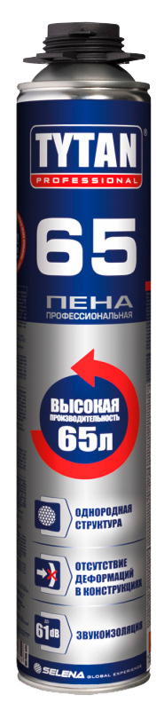
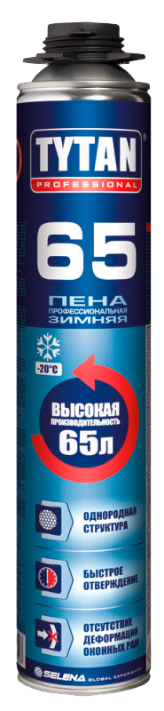
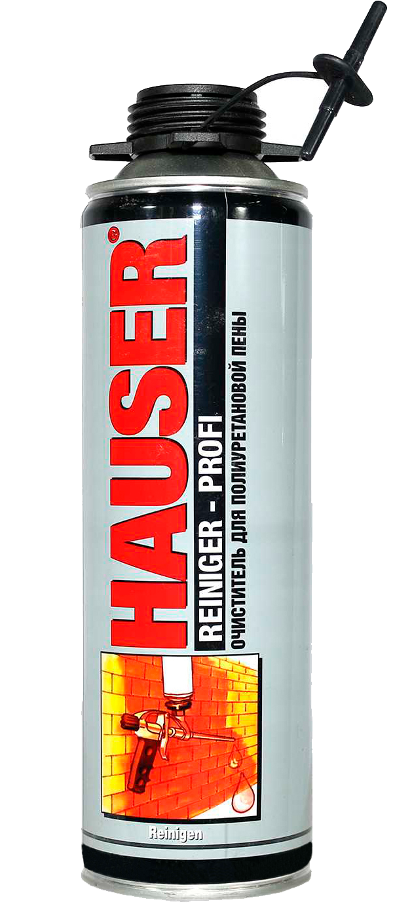

Профессиональные пены

- Время предварительной обработки: до 40 мин.
- Температура применения: от +5°C до +30°C
- Температура баллона: от +15°C до +30°C
- Водопоглощение (после 24 ч.): ≤2,5 %
- Высокий уровень термо и звукоизоляции
- Устойчивость к влаге и плесени
- Производительность: до 42 л
- Класс огнестойкости: F / B3 (EN 13 501 / DIN 4102-1)
- Срок годности: 12 месяцев

- Производительность: до 65л.
- Звукоизоляция: до 61 dB
- Время предварительной обработки: до 30 мин.
- Температура применения: от +5°C до +30°C
- Температура баллона: от +10°C до +30°C
- Водопоглощение (после 24 ч.): ≤ 1,5 %
- Класс огнестойкости: F / B3 (EN 13 501 / DIN 4102-1)
- Срок годности: 18 месяцев

- Производительность: до 65л.(при темп.+20°C)
- Звукоизоляция: до 61 dB
- Время предварительной обработки: до 40 мин. (при темп. +20°C)
- Температура применения: от -20°C до +30°C
- Температура баллона: от +5°C до +30°C
- Водопоглощение (после 24 ч.): ≤ 1,5 %
- Класс огнестойкости: F / B3 (EN 13 501 / DIN 4102-1)
- Срок годности: 12 месяцев

- Класс огнестойкости B1 (DIN 4102), EI 240 (EN 13501-2)
- Производительность: до 42л.
- Время предварительной обработки: до 40 мин.
- Температура применения: от +10°C до +30°C
- Температура баллона: от +10°C до +30°C
- Не содержит LPG вспенивающего агента
- Срок годности: 12 месяцев
- сертифицировано «Пожполисерт» АНО по сертификации «Электросерт», сертификат № С-PL.ПБ05.В.00863 ***** подтверждено MPA BAU Hannover и Институтом Cтроительной Tехники (ITB) в Варшаве
МОНТАЖНЫЕ ПЕНЫ

- Время предварительной обработки: до 80 мин.
- Температура применения: от +5°C до +30°C
- Темпeратура баллона: от +15°C до +30°C
- Водопоглощение (после 24 ч.): ≤2,5 %
- Высокий уровень термо и звукоизоляции
- Устойчивость к влаге и плесени
- Производительность: до 42 л
- Класс огнестойкости: F / B3 (EN 13 501 / DIN 4102-1)
- Срок годности: 12 месяцев

- Производительность до 30л. (при темп. +23°C и относительной влажности 50% )
- Пригодна для применения в любое время года. Специальная формула позволяет применять при низких температурах (до -10°C)
- Отличные термо и звукоизоляционные характеристики
- Быстрое затвердение: время покрытия пленкой — 5 минут и возможность обрезки в течение 45 минут
- Превосходная адгезия практически со всеми строительными материалами
- Низкое расширение: гарантирует отсутствие механической деформации дверей и оконных рам
- Экологичность – не разрушает озоновый слой

- Очиститель монтажной пены Hauser Reiniger Profi - это универсальное средство для удаление не отвердевшей полиуретановой пены и клея. Незаменим для очистки клапанов баллонов и пистолетов для нанесения монтажных пен. Не оставляет следов. Средство безвредно для озонового слоя.

- Легкий в применении классический пистолет с новым клапаном для эффективного нанесения профессиональной полиуретановой пены.
СИЛИКОНОВЫЕ ГЕРМЕТИКИ
- Высококачественный кислотный силиконовый герметик предназначен для строительных и общих ремонтных работ внутри и снаружи помещения.
- Время образования пленки: 15–25 мин при темп. 23°C / 50% отн. влажности
- Время отверждения: 2 мм/сутки при темп. 23°C / 50% отн. влажности
- Твердость по Шору A :16
- Термостойкость -40°C ÷ +100°C
- Цвет: бесцветный, белый
- Срок годности: 15 месяцев
- Соответствует требованиям ISO 11600 стандарт F типа, 20LM класс Герметики.
- Высококачественный кислотный силиконовый герметик с фунгицидом.
- Основа: силиконовый полимер с кислотной системой отверждения
- Время образования пленки: 15–25 мин при темп. 23°C / 50% отн. влажности
- Время отверждения: 2 мм/сутки при темп. 23°C / 50% отн. влажности
- Твердость по Шору A :14
- Термостойкость -40°C ÷ +100°C
- Цвет: бесцветный, белый
- Срок годности: 15 месяцев
- Соответствует требованиям ISO 11600 стандарт F типа, 20LM класс Герметики.

- Герметик предназначен для герметизации швов, подверженных воздействию высоких температур.
- Основа: силиконовый полимер с кислотной системой
- Время образования пленки: 5–30 мин при температуре 23°C / 50% отн. влажности
- Время отверждения: 3 мм/сутки при температуре 23°C / 50% отн. влажности
- Модуль 100% удлинения 0.5 МПА
- Деформационная подвижность: ±20%
- Твердость по Шору: A : 30
- Термостойкость: –65°C ÷ +260°C (красный) кратковременная до +315°C
- Цвет: красный
- Срок годности: 24 месяцев
- Соответствует требованиям ISO 11600 стандарт F & G типа, 20HM класс Герметики.

- Огнестойкий силикатный герметик предназначен для долговременного ремонта и заполнения соединений, трещин и щелей в каминах, печах, топках и дымоходах. Примесь стекловолокна создает прочный дымо- и газонепроницаемый слой, устойчивый к усадке и расширению.
- Консистенция: паста
- Время отверждения: 2-3 мм в сутки, в зависимости от глубины щели и окружающей температуры
- Температура применения: выше 0°С
- Термостойкость: до +1500°C
- Цвет: черный
- Срок годности: 24 месяцев

- Однокомпонентный пластоэластичный герметик предназначенный для заполнения трещин и герметизации всех швов, подверженных слабым деформациям (±7,5%) внутри и снаружи помещения.
- Основа: водно-акриловая дисперсия
- Время образования пленки: 10–25 мин при темп. 23°C / 50% отн. влажности
- Время отверждения: 1 мм/сутки при темп. 23°C / 50% отн. влажности
- Деформационная подвижность ±7.5%
- Термостойкость: -25°C ÷ + 80°C
- Цвет белый
- Срок годности: 12 месяцев
- Соответствует требованиям ISO 11600 стандарт F типа, 7,5 класс Герметики.
- Очиститель силикона Титан предназначен для удаления силикона.
- Толщина слоя очистителя должна быть в 2—3 раза больше толщины слоя удаляемого продукта, и, как минимум, иметь 4 мм. Силикон растворяется в течение разных промежутков времени, тонкий слой — меньше, чем за час, более толстые слои — от нескольких часов до целого вечера.
- Готовая к использованию паста Титан содержит органический растворитель, рекомендуется для удаления свежо нанесенного герметика и остатков застывшего продукта из швов на всех видах строительных материалов, включая стекло, бетон, керамику, пластмассы, текстиль и другие. Также Tytan рекомендуется для удаления плесени со старых швов.